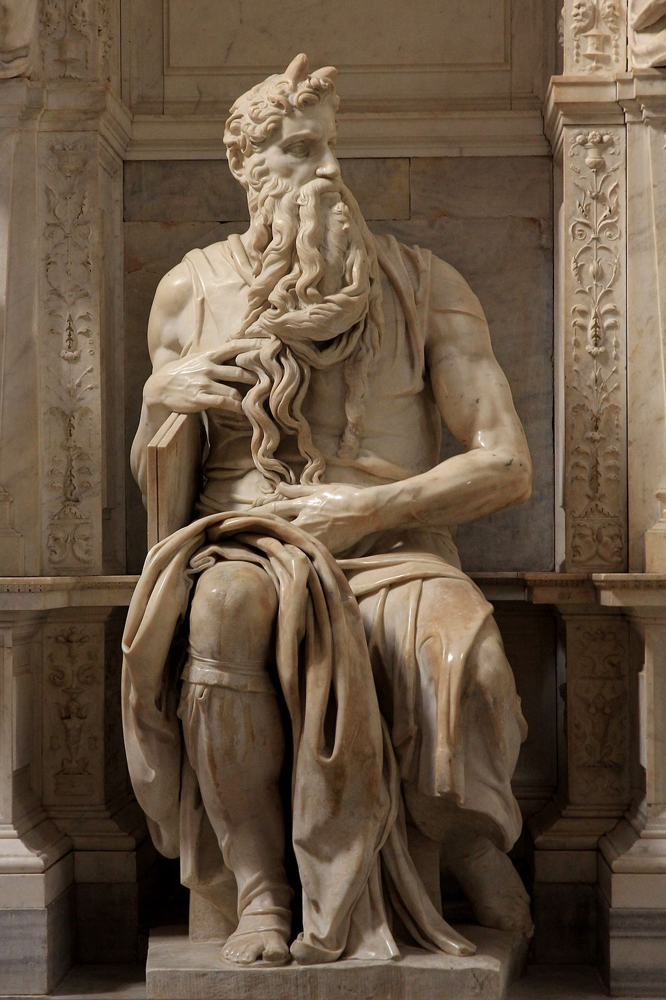

<head>
<meta charset="UTF-8" />
<meta name="keywords" content="drawing, painting" />
<meta name="description" content="drawings by Sunjy" />
<title>Sunjy</title>
<link rel="shortcut icon" type="image/x-icon" href="../../mImages/mCommon/favicon.ico" media="screen" />
<link rel="stylesheet" type="text/css" href="../../mCsses/mCommon/mCssA.css" />
<link rel="stylesheet" type="text/css" href="../../mCsses/mCommon/mCssB.css" />
<link rel="stylesheet" type="text/css" href="../../mCsses/mCommon/mCssC.css" />
<link rel="stylesheet" type="text/css" href="../../mCsses/mCommon/mCssD.css" />
<link rel="stylesheet" type="text/css" href="../../mCsses/mContent/mCssA.css" />
<link rel="stylesheet" type="text/css" href="../../mCsses/mContent/mCssB.css" />
<link rel="stylesheet" type="text/css" href="../../mCsses/mContent/mCssC.css" />
<link rel="stylesheet" type="text/css" href="../../mCsses/mContent/mCssD.css" />
</head>
<script type="text/javascript" src="../../mScripts/mContent/mContentAA.js" /></script>
<script type="text/javascript" src="../../mScripts/mContent/mContentAB.js" /></script>
<script type="text/javascript" src="../../mScripts/mContent/mContentAC.js" /></script>
<script type="text/javascript" src="../../mScripts/mContent/mContentAD.js" /></script>
<script type="text/javascript"></script> 
<script type="text/javascript">
document.write('<div class="mImgAbsolute"></div>');
/*
document.write('<p class="mFontSizeBColor" />From a white paper...</p>');
document.write('<table class="center"><tr><td>');
document.write('');
document.write('</td></tr></table>');
*/
</script>


<script type="text/javascript">
document.write('<p class="mFontSizeBColor" />Moses</p>');
document.write('<p class="mFontSizeSColor" />Moses, by Michelangelo, depicts the biblical figure of Moses with horns on his head. It is based on a description in chapter 34 of Exodus in the Latin translation of the Bible used at that time.<br><br>Moses is seated with his right arm protecting the stone tablets bearing the Ten Commandments while fondling his beard with two fingers. His long beard is rendered in sculpture, as soft flowing ringlets of hair that flow like waterfalls from his face.<br><br>Moses’s other hand displays his throbbing veins, tense muscles, at the tail end of his snake-like beard. He appears alert to any threat and ready to defend the tablets with violent action.<br><br>Moses’s draperies fall in graceful folds. However, the anatomy of the muscles and the visible bones and tissues of the hands, the legs, and knees, are evidence of latent energy.<br><br>Giorgio Vasari, an Italian painter, and historian, who was the first to use the term “Renaissance” in print in the 1500s, says of this sculpture:<br><br>“The beautiful face, like that of a saint and mighty prince, .. so splendid and shining does it appear, and so well has the artist presented in the marble the divinity with which God had endowed …”<br><br>Sigmund Freud, spent weeks in 1913 trying to understand the sculpture’s emotional effect. In Freud’s “The Moses of Michelangelo,” he provides this description of the statue:<br><br>“The Moses of Michelangelo is represented as seated; his body faces forward, his head with its mighty beard looks to the left, his right foot rests on the ground, and his left leg is raised so that only the toes touch the ground. His right arm links the Tables of the Law with a portion of his beard; his left arm lies in his lap.”<br><br>Moses is housed in the church of San Pietro in Vincoli in Rome. It was commissioned in 1505 by Pope Julius II for his tomb.<br><br>Moses<br><br>Moses is an important prophet in Judaism, Christianity, Islam, the Bahá’í Faith, and several other Abrahamic religions. In the Bible, he was the leader of the Israelites and lawgiver, to whom the authorship of the Torah is traditionally attributed.<br><br>According to the Book of Exodus, Moses was born in a time when his people, an enslaved minority, were increasing in population and, as a result, the Egyptian Pharaoh worried that they might ally themselves with Egypt’s enemies.<br><br>Moses’ Hebrew mother, secretly hid him when the Pharaoh ordered all newborn Hebrew boys to be killed to reduce the population of the Israelites.<br><br>Through the Pharaoh’s daughter, the child was adopted as a foundling from the Nile river.<br><br>After killing an Egyptian slavemaster, Moses fled to Midian, where he encountered the Angel of the Lord. God sent Moses back to Egypt to demand the release of the Israelites from slavery.<br><br>After the Ten Plagues, Moses led the Exodus of the Israelites out of Egypt and across the Red Sea, after which they based themselves at Mount Sinai, where Moses received the Ten Commandments.<br><br>After 40 years of wandering in the desert, Moses died within sight of the Promised Land.<br><br>Rabbinical Judaism calculated a lifespan of Moses corresponding to 1391–1271 BCE. <br></p>');
document.write('<table class="center" /><tr><td>');
document.write('<br>Moses is seated with his right arm protecting the stone tablets bearing the Ten Commandments while fondling his beard with two fingers. His long beard is rendered in sculpture, as soft flowing ringlets of hair that flow like waterfalls from his face.<br><br>Moses’s other hand displays his throbbing veins, tense muscles, at the tail end of his snake-like beard. He appears alert to any threat and ready to defend the tablets with violent action.<br><br>Moses’s draperies fall in graceful folds. However, the anatomy of the muscles and the visible bones and tissues of the hands, the legs, and knees, are evidence of latent energy.<br><br>Giorgio Vasari, an Italian painter, and historian, who was the first to use the term “Renaissance” in print in the 1500s, says of this sculpture:<br><br>“The beautiful face, like that of a saint and mighty prince, .. so splendid and shining does it appear, and so well has the artist presented in the marble the divinity with which God had endowed …”<br><br>Sigmund Freud, spent weeks in 1913 trying to understand the sculpture’s emotional effect. In Freud’s “The Moses of Michelangelo,” he provides this description of the statue:<br><br>“The Moses of Michelangelo is represented as seated; his body faces forward, his head with its mighty beard looks to the left, his right foot rests on the ground, and his left leg is raised so that only the toes touch the ground. His right arm links the Tables of the Law with a portion of his beard; his left arm lies in his lap.”<br><br>Moses is housed in the church of San Pietro in Vincoli in Rome. It was commissioned in 1505 by Pope Julius II for his tomb.<br><br>Moses<br><br>Moses is an important prophet in Judaism, Christianity, Islam, the Bahá’í Faith, and several other Abrahamic religions. In the Bible, he was the leader of the Israelites and lawgiver, to whom the authorship of the Torah is traditionally attributed.<br><br>According to the Book of Exodus, Moses was born in a time when his people, an enslaved minority, were increasing in population and, as a result, the Egyptian Pharaoh worried that they might ally themselves with Egypt’s enemies.<br><br>Moses’ Hebrew mother, secretly hid him when the Pharaoh ordered all newborn Hebrew boys to be killed to reduce the population of the Israelites.<br><br>Through the Pharaoh’s daughter, the child was adopted as a foundling from the Nile river.<br><br>After killing an Egyptian slavemaster, Moses fled to Midian, where he encountered the Angel of the Lord. God sent Moses back to Egypt to demand the release of the Israelites from slavery.<br><br>After the Ten Plagues, Moses led the Exodus of the Israelites out of Egypt and across the Red Sea, after which they based themselves at Mount Sinai, where Moses received the Ten Commandments.<br><br>After 40 years of wandering in the desert, Moses died within sight of the Promised Land.<br><br>Rabbinical Judaism calculated a lifespan of Moses corresponding to 1391–1271 BCE. <br>" />');
document.write('</td></tr></table>');
</script>


